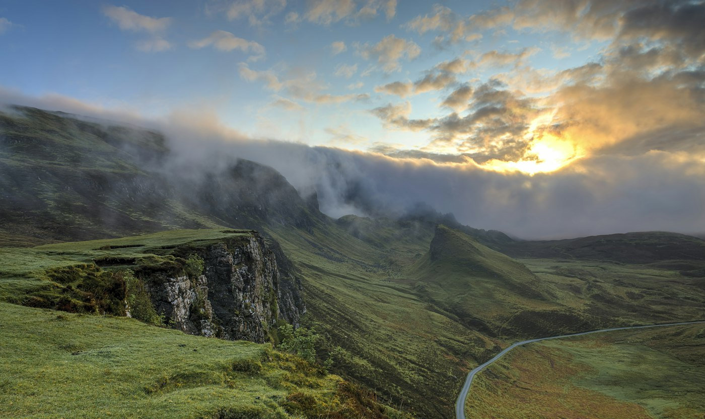
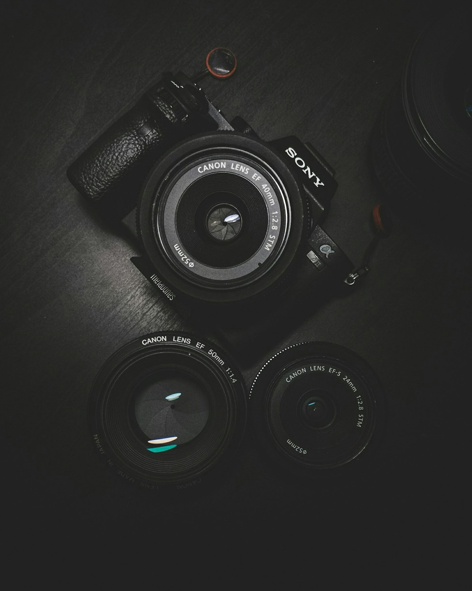
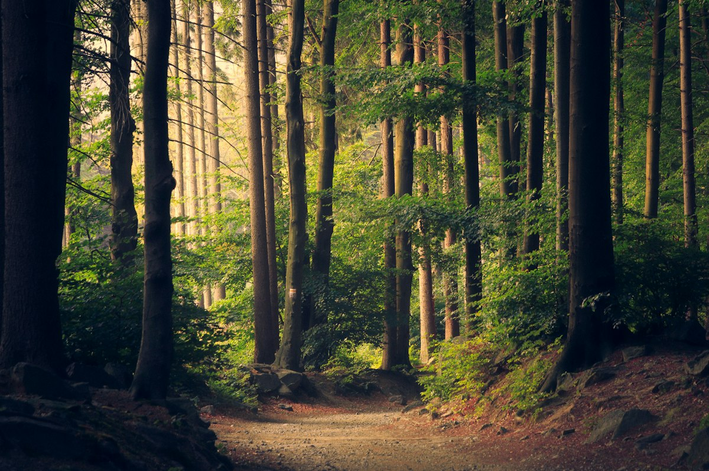
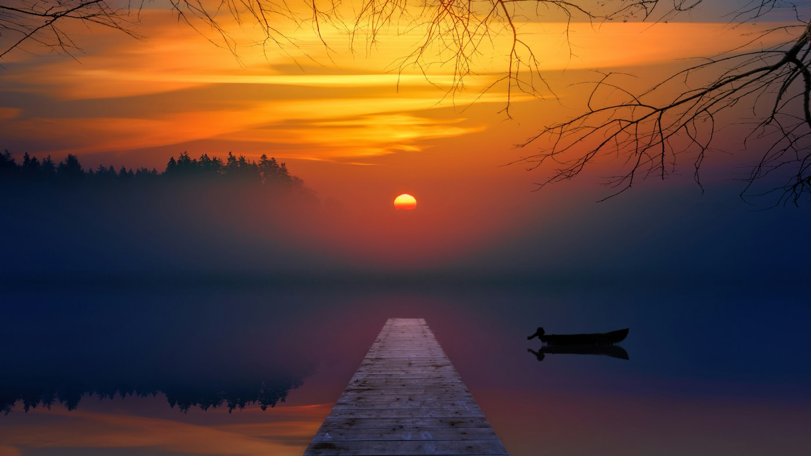

Galeri
Üye çalışmalarından esinlenen seçilmiş kareler.






Görseller Unsplash üzerinden; ücretsiz lisansla kullanılmıştır.
Üye çalışmalarından esinlenen seçilmiş kareler.




Görseller Unsplash üzerinden; ücretsiz lisansla kullanılmıştır.